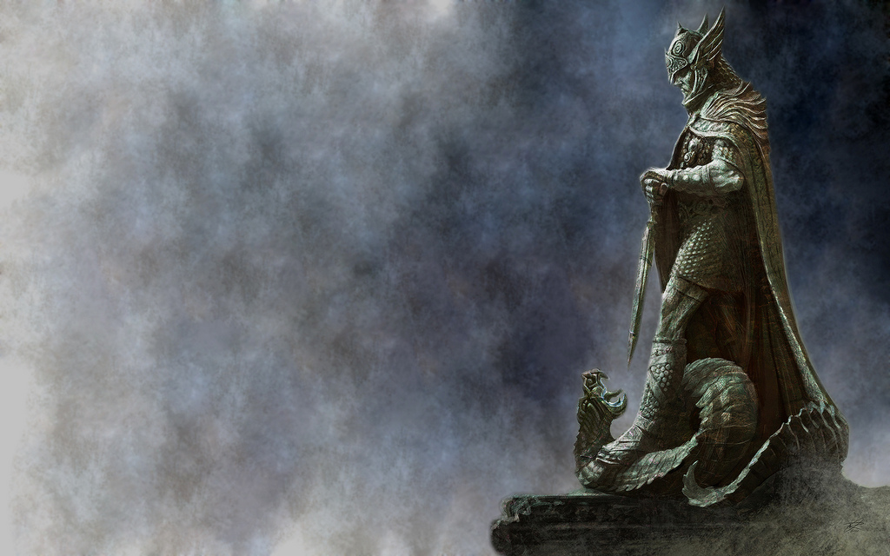

Play as the dragonborn, the chosen one. Learn the shouts of dragons from long ago. Each shout possesses a different ability. The game also takes place during a civil war. You may choose to fight for the Nords' beliefs or help establish control for the empire. It includes magic fights to dueling with swords. The graphics are amazing for being made in 2011. Everything from flowing rivers to ants crawling on logs. Epic encounters with ancient dragons.
by Sendoa Portuondo at Flickr